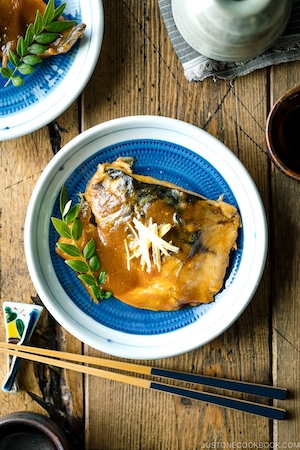

Back
Saba Misoni

Description
Saba Misoni is a classic Japanese home cooked dish where mackerel fillets
are simmered in miso sauce along with ginger. Tender and flavorful, it
goes beautifully with steamed rice!
Ingredients
- 2 fillets mackerel (saba) (13 oz, 375g)
For seasoning #1
- 4 Tbsp water
- 4 Tbsp sake
- 2 Tbsp mirin
- 2 Tbsp sugar
- 2 Tbsp miso
- 1 knob ginger
For seasoning #2
- 2 Tbsp miso
- 1 tbsp soy sauce
Steps
Prepare ingredients
-
Scrape off the skin from 1 knob ginger with a knife (or a spoon) and cut
into thin slices. Keep half the slices for cooking the fish and use the
other half for the next step.
-
Cut the other ginger slices into thin julienned strips and transfer to a
plate. This is for garnish.
-
Cut each of the 2 fillets mackerel (saba) in half, in a slanted angle
(this creates more surface to absorb flavors). Make a shallow cross
incision on the skin side of the thickest part of the fillets.
Blanch the fish
-
Bring a medium pot of water to a boil. Once boiling, gently add a
fillet, one at a time, for a quick blanch to remove the sliminess,
smell, and impurities. Scoop up the fish with a fine-mesh strainer or a
slotted spoon. Alternatively, you can pour boiling water over the
fillets.
-
Quickly shock the fish in the ice bath. And repeat this blanch/ice bath
process with the rest of the fillets.
-
Clean the fish in the ice water, removing blood or any impurities. The
ice water helps firming up the flesh of the fish as well. Once clean,
transfer to a plate/tray and set aside.
Cook the fish
-
In a medium/large saucepan, add the Seasoning #1—4 Tbsp water, 4 Tbsp
sake, 2 Tbsp mirin, 2 Tbsp sugar, 2 Tbsp miso (keep the other 2 Tbsp
miso for later), and 1 knob gingerhe ginger slices.
-
Turn the heat to medium and bring the sauce to a boil while mixing the
ingredients.
- When boiling, place mackerel in a single layer, skin side up.
-
Reduce heat to medium-low and put an otoshibuta (drop lid). Gently
simmer for 13–15 minutes. Otoshibuta keeps the fish down and helps the
sauce circulate over the fish.